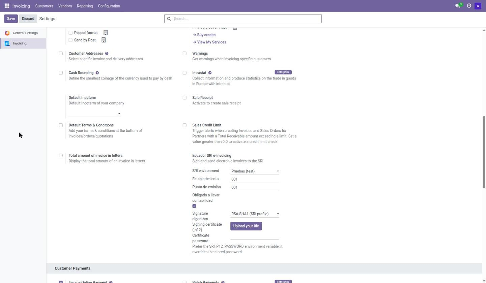
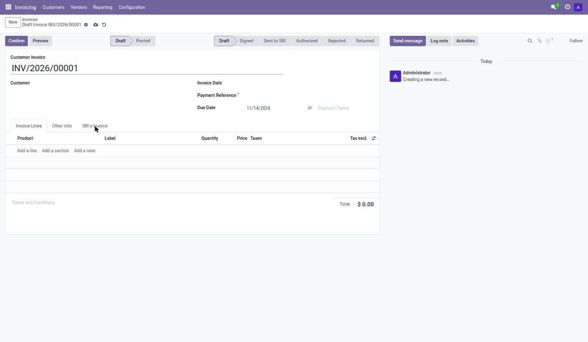

Turn a posted customer invoice into an authorized SRI factura without leaving Odoo: build the XML, compute the 49-digit clave de acceso, sign it with your .p12 (XAdES-BES), send it to the SRI recepción/autorización web services and attach the authorized XML and a RIDE PDF.
sri-einvoice engine (Apache-2.0).SRI_P12_PASSWORD
environment variable first; the stored field is a single-tenant fallback.A dedicated settings block per company, and a Sign → Send → Authorize toolbar with a live status bar on every customer invoice.


Python packages on the Odoo server: lxml, cryptography,
and sri-einvoice. Odoo 19.0, Accounting app.